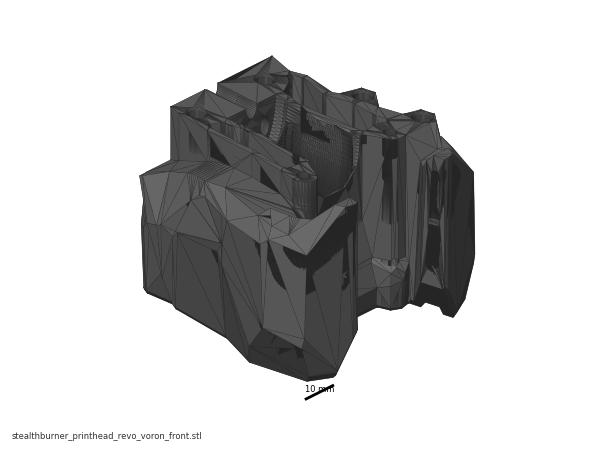
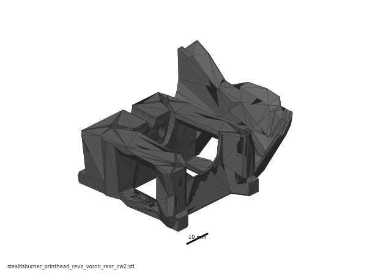
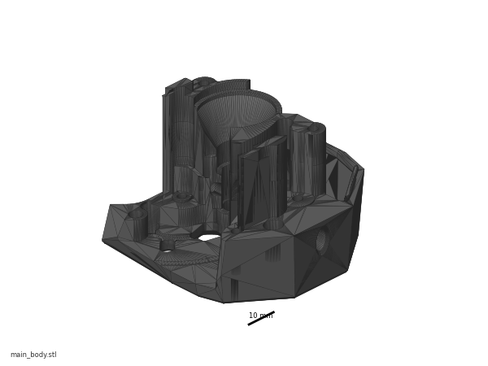
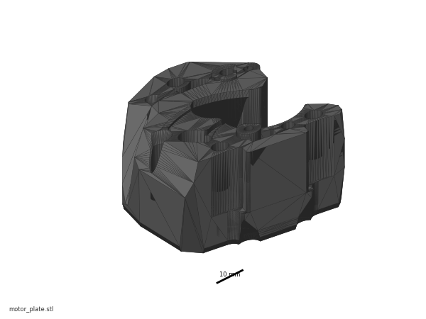
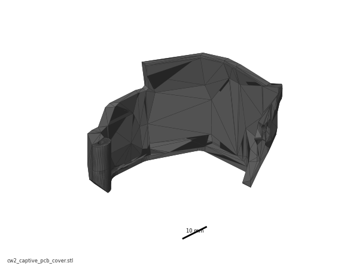

Before you start Chapter 08¶
Before you start · Chapter 08 — Toolhead: Stealthburner, Clockwork 2, Revo HF, Nitehawk-SB V2
Builds the complete toolhead on the bench — extruder, hotend, fans, LEDs, toolboard — and hangs it on the X carriage with every connector made, so Ch 10 only has to pull one umbilical through the chain.
What you're building in this chapter. The toolhead — the part that actually prints — in four named assemblies. Clockwork 2 is the extruder: a slim stepper turning two geared wheels that grip the filament between them and push it down. The tool cartridge is the removable block holding the Revo HF hotend — heatsink, HeaterCore and a nozzle you change by hand — plus the PTFE tube that feeds it. Stealthburner is the orange shroud that wraps the front, carrying two fans (one blowing through the hotend's heatsink to keep its cold side cold, one blowing cooling air at the print) and three addressable LEDs behind a diffuser. The Nitehawk-SB V2 is the toolboard: a small PCB riding on the toolhead that collects the heater, thermistor, fans, LEDs, probe and extruder motor onto a single USB-plus-24 V umbilical instead of a loom. All four are built on the bench and only then hung on the X carriage, with every toolhead-side connector already made.
Time: 3.0–4.5 h hands-on, first build (survey §7.2).
Sessions: 10 × ~30 min — every minute figure in this chapter, here and in the Pause lines, is a first-build estimate.
Prerequisites:
- Ch 05 — Gantry. X carriage halves (
x_frame_V2TR_MGN12_left/right) built, heat-set inserts and M3 nuts already in them, carriage running the full X travel with no bind. - Ch 07 — A/B belts. Belts clamped into the carriage and tensioned. The carriage must be finished before anything hangs off it.
- Print batches: B02 (the orange accent parts:
[a]_stealthburner_main_body,[a]_guidler_a/b,[a]_latch,[a]_latch_shuttle, spare[a]_pcb_spacer), B06 (Stealthburnerrevo_voronprintheads, Clockwork 2 black parts,cw2_captive_pcb_cover, the Klicky set), and B04 for the carriage. Batch ids fromdocs/voron-print-plan.md. - LDO-supplied printed parts, no print needed: CW2 Chain Anchor Tilted ×1, CW2 PCB Spacer ×1, Stealthburner LED Diffuser ×1 (clear PETG), LDO Nozzle Probe ×1, NH Adapter Mount ×1. src
Tools
- Hex 1.5 / 2 / 2.5 mm (1.5 mm is supplied)
- Temperature-controlled soldering iron + the supplied brass M3 insert tip
- Flush cutters and a small flat file (5015 fan ears)
- Multimeter (continuity and thermistor resistance)
- Digital caliper (drive-gear position, PTFE stickout)
- JST-PH2.0 crimp tool — only if you re-terminate the Revo pigtails yourself
- Fine sandpaper (supplied ×2), for the drive shaft face and the fan ears
- Small pliers, tweezers
Consumables: medium-strength threadlocker (Loctite 243), light grease for the BMG idler bearings, E0508 ferrules, zip ties 3×150 mm.
Printed parts
Parts arrive in the bins named below (see the bin map in print/README.md#bins); check the bin label's list before you start.
| Looks like | STL | Bin | Qty | Colour |
|---|---|---|---|---|
 |
[a]_stealthburner_main_body.stl |
08-SB | 1 | Orange |
 |
stealthburner_printhead_revo_voron_front.stl |
08-SB | 1 | Black |
 |
stealthburner_printhead_revo_voron_rear_cw2.stl |
08-SB | 1 | Black |
 |
[o]_stealthburner_LED_carrier.stl |
08-SB | 1 | Black (opaque) |
 |
[o]_stealthburner_LED_diffuser_mask.stl |
08-SB | 1 | Black (opaque) |
| — | [c]_stealthburner_LED_diffuser.stl |
— | 1 | kit-supplied in clear PETG — not printed here |
 |
main_body.stl (Clockwork 2) |
08-CW2 | 1 | Black |
 |
motor_plate.stl (Clockwork 2) |
08-CW2 | 1 | Black |
  |
[a]_guidler_a.stl / [a]_guidler_b.stl |
08-CW2 | 1 each | Orange |
  |
[a]_latch.stl / [a]_latch_shuttle.stl |
08-CW2 | 1 each | Orange |
[a]_pcb_spacer.stl (CW2) |
spare-alt | 1 | Supplied printed; you printed a 0.3 g spare | |
 |
cw2_captive_pcb_cover.stl (Nitehawk-SB repo) |
08-CW2 | 1 | Black — replaces the stock cable_door |
| — | CW2 Chain Anchor Tilted | — | 1 | Supplied printed — do not print chain_anchor_2hole |
| — | Klicky set (KlickyProbe_v2 ×2, Probe_Dock_v2.1, Probe_magnet_holder, Probe_pressfit_holder, KlickyProbe_AB_mount_v2 + holder, Mount_*, Dock_mount_fixed_v2) |
— | 1 set | Black — alternative path only, bag it (Step 08.54) |
{kind=link}
{kind=link}
{kind=link}
{kind=link}
{kind=link}
Hardware (chapter totals)
| Fastener / part | Qty | Note |
|---|---|---|
| Heat-set insert, brass, M3×5×4 | 16 | 4 CW2 main body, 4 CW2 motor plate, 1 latch, 1 latch shuttle, 1 guidler arm, 3 chain anchor, 2 printhead rear — all (verify on bench), the SB manual highlights locations, not counts |
| M3×8 SHCS | 10 | 1 motor, 1 cable bridge, 4 tool cartridge, 2 toolboard, 2 CW2→carriage |
| M3×16 SHCS | 3 | 1 joins the guidler halves, 2 tool cartridge |
| M3×20 SHCS | 1 | chain anchor |
| M3×25 SHCS | 6 | 2 motor plate, 1 tension arm, 1 latch, 2 SB mounting |
| M3×30 SHCS | 1 | 1 motor (the probe's 2 are counted in Ch 07) |
| M3×50 SHCS | 2 | SB mounting (lower pair) |
| M3×6 FHCS | 3 | 1 CW2 main body (threadlocked), 2 part-cooling fan |
| M3×10 FHCS | 2 | fan adapter PCB to the 5015 |
| M3×6 captive screw | 1 | LDO cable cover; kit ships 2 |
| M3 washer | 1 | under the M3×8 motor bolt |
| Nozzle-probe hardware (M2×10 self-tapping ×2, M3 set screw ×1) | 0 here | the nozzle probe is built once, in Ch 09 Steps 09.27–09.29 — counted in that chapter's table |
| MR85 bearing | 2 | 1 motor plate, 1 main body |
| Bondtech IDGA gear set | 1 | drive gear + 50T gear + shaft |
| Thumb Screw Kit (thumbscrew, spring ~12 mm × 6 mm OD × 1 mm wire, washer) | 1 | |
| LDO-36STH20-1004AHG(VRN) pancake stepper, NEMA14 36 mm | 1 | |
| E3D Revo Hotend (HF), Revo Voron form factor | 1 | 60 W (LDO Edition HeaterCore), 300 °C max, Semitec 104NT-4-R025H42G |
| PTFE 4 mm OD / 2 mm ID, 10 cm | 1 | tool cartridge, 11 mm stickout |
| 40×40×10 axial fan, 24 V | 1 | hotend fan |
| 50×50×15 centrifugal fan, 24 V | 1 | part cooling |
| Nitehawk-SB V2 toolboard | 1 | STM32G0B1, integrated ADXL345 |
| Stealthburner Fan Adapter PCB (SBurnerFanAdapter_V2.0) | 1 | |
| Toolhead cable (combined USB + 24 V), XT30(2+2) | 1 | from the Toolhead PCB Cables bag |
| Ferrule, E0508 | 2 | hotend heater, if you re-terminate |
| M3×10 SHCS | 3 | USB adapter stack (assembled here, mounted in Ch 09) |
| Ring-lug ground wire, toolboard → extruder motor, plus its short motor-end screw | 1 | supplied; board end under a toolboard M3×8 at Step 08.43, motor end at Step 08.53 — screw length (verify on bench) |
Read first
- Do the insert pass before you assemble anything. A missed insert in the CW2 main body means stripping the extruder back to bare plastic (survey §5.2 W3). All 16 go in first, in Steps 08.3–08.7.
- Five of the six Rev D+ deltas land in this chapter. PROBE / TH0 / XY-Endstop are JST-PH2.0, not XH2.5; the board-to-board fan header is keyed and gender-reversed; there is no ADXL mount; the USB-adapter cover is the V2 part; and there is an undocumented grounding scheme (survey §4.1).
- The kit ships both probes and you build the inductive one. LDO's wiring guide, the Rev D+ Klipper config and survey §4.3 all assume the Omron inductive probe for QGL plus the LDO nozzle probe as the Z endstop. The Klicky parts are printed; bag them (Step 08.54).
- Skip the ADXL mount entirely. The Nitehawk-SB has an ADXL345 on board. Do not fit the two extra inserts SB p.38 highlights, and do not print
ADXL345_Mounts/*. src - The XY-endstop port on the toolboard is unused in a standard build, and the PROBE port's third pin is 24 V — Klicky must not have it populated. src
- Bench-only work for a print-idle window (the index's while it prints rows assume you use them): Steps 08.3–08.7 (inserts), 08.9–08.11 (idler, guidler, thumbscrew), 08.12–08.14 (bearings), 08.27 (Revo) and 08.33–08.36 (leads, 5015 ears, LED chain) need no printer. If plate B07-P1 is already off the Prusa, heat-set the inlet panel (Ch 09 Step 09.10) and the bed WAGO mount (Ch 09 Step 09.34) in the same iron session as 08.3–08.7 — those two steps then become a confirm.
Sources for this chapter
- Stealthburner assembly manual, pinned commit
1bccf05— pp. 11–32, 37–56, 59, 64–67. The spine of this chapter: 48 of the 65 steps. - Voron 2.4r2 assembly manual, pinned commit
de7e89d— pp. 129–130 (carriage prep), 144 (probe), 146–147 (the hand-off to and from the SB manual). - LDO Rev D wiring guide — § Wiring the Toolhead PCB and § Assembling the Nozzle Probe.
- LDO Rev D printed-parts guide — which parts LDO supplies printed and which are on the do-not-print list.
- LDO Rev D 350 BOM — fan voltages, supplied printed parts.
- LDO Build Notes / build FAQ — the per-page deviations for pp. 129–130, 144, 146–147.
- LDO Nitehawk-SB V2 board doc § ESD Hardening — the grounding scheme (Step 08.53).
- Nitehawk-SB-V2 repo — board pinout, fan-adapter pinout, grounding scheme, ground routing, chain ties, USB-adapter ground,
STLs/. The repo carries no LICENSE file (re-checked 2026-09-05); the six board images this chapter needs are nevertheless mirrored intoassets/remote/08-toolhead/under Alex's 2026-09-05 image-licensing ruling (CONVENTIONS.md — LDO / Nitehawk-SB V2 / Leviathan / LDOVoron2 material, attributed, non-commercial), with the original URLs kept in every Source line. See that folder'sSOURCES.txt. - LDO Rev D+ Klipper config
leviathan-printer-rev-d-sbv2.cfg—chain_count,color_order, the fan pins,[probe],[resonance_tester]. - E3D Revo Voron support — hotend assembly order and the anti-clockwise-only rule.
- Voron Stealthburner printheads README — the
E-RVhotend code. - Klicky Probe (Voron v2.4) — alternative path only, Step 08.54.
- Fabreeko LDO Voron 2.4 kit page — what "Rev D+" means (the secondary USB port).
{kind=link}
{kind=link}
{kind=link}
{kind=link}
{kind=link}
{kind=link}
Video coverage (Steve Builds, pre-release LDO kit — differs from Rev D+): Part 5 @1:33:00 (+13m), Part 5 @1:45:23 (+8m), Part 5 @2:00:12 (+22m), Part 5 @2:17:50 (+30m), Part 5 @3:07:12 (+10m), Part 5 @3:17:06 (+22m), More Extras! @0:46:09 (+26m)